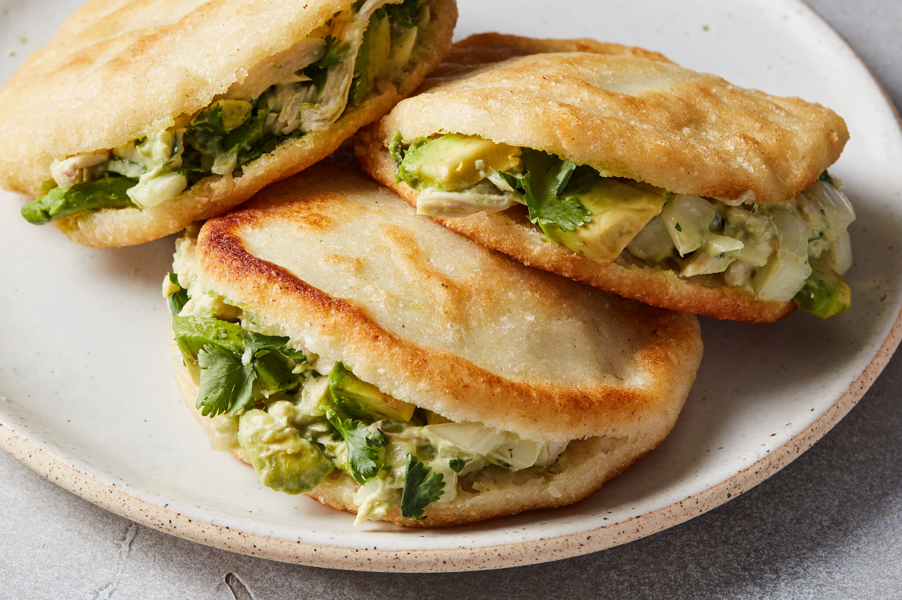

Arepa is a highly versatile cornbread made from ground corn dough or precooked corn flour. It is commonly consumed in Venezuela, Colombia, Panama, Puerto Rico, and the Dominican Republic. In Venezuela, arepa is eaten at any time of the day, throughout the whole country, and across all socio-economic groups.
Meal prep time : 30 minutes
Servings : 8